Soy un estudiante de la carrera de Diseño de la Universidad Autónoma Metropolitana, actualmente cursando el 8vo trimestre de mi carrera universitaria.
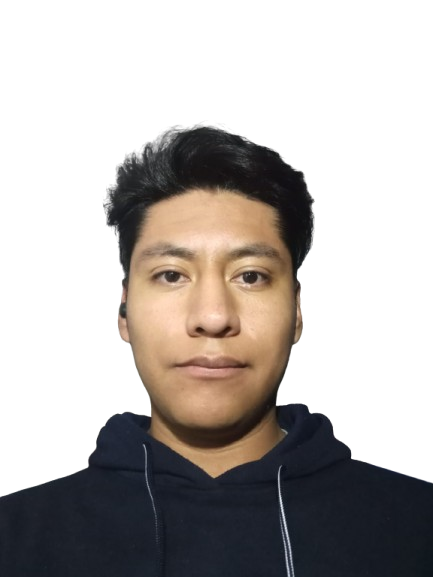
Durante mi estancia en la universidad he aprendido variedad de herramientas digtiales para modelado, trazo vectorial, edicion de imagenes, renders, edicion de video, al igual que herramientas de trabajo como caladora de banco, taladro, taladro de banco, sierra de mesa, y todas las herramientas para prototipar y realizar modelos con materiales distintos.
El motivo por el cual decidí cursar la carrera de Diseño fue porque me gusta hacer cosas manuales, me gusta hacer prototipos, modelos y modelos funcionales que propongan una solución a un problema en específico
Me gusta conocer a las personas y sus problemas particulares y el poder resolver dichas cuestiones me hace sentir que formo parte de la vida de la gente.
HISOTIRAL ACADÉMICO
Primaria:
Narciso Bassols
Secundaria:
Escuela Secundaria Téncnica No. 48
Preparatoria:
Bachilleres No. 8
Universidad:
Universidad Autónoma Metropolitana unidad Cuajimalpa
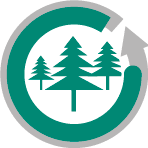
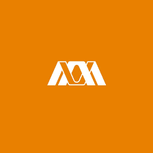
PASIONES
Mis pasiones son la musica y los videojuejos.
En cuanto a la musica me gusta casi todo tipo de musica, pero los generos que mas me gustan son el BOSSA NOVA, SOFT ROCK, R&B, METAL, J-POP y el JAZZ.
Respecto a los videjuegos me gustan los estilo PIXEL ART, SHOOTER, MMORPG, INDIE, CARRERAS, etc.
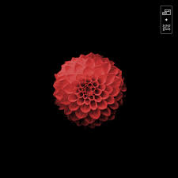
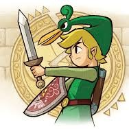
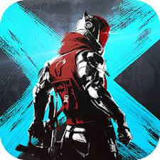
Mientras curso mi carrera en la universidad, realizo variedad de actividades que abarcan desde el ámbito digital hasta el material.
He realizado proyectos de planeacion de experiencias, animaciones, creación de productos, planeación de espacios, modelados en 3D, renders, electrónica, señaletica, termoformado, creación de maquetas, planos técnicos, elementos vectorizados, iconos, etc.
Dichos proyectos se realizaron en los laboratorios de diseño que se imparten en la unidad, dentro de los cuales relizamos investigacion de los usuarios de los cuales se pretende resolver su problematica en un contexto definido previamente.
PROYECTOS
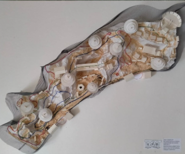
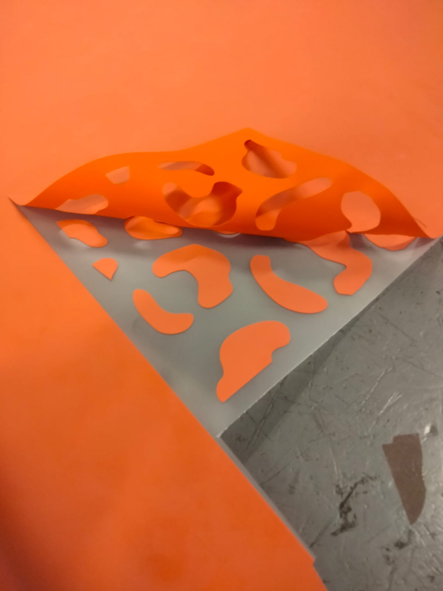
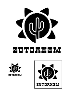
Durante el transcurso de la carrera de diseño he aprendido a usar variedad de herramientas que me permitieron realizar trabajos de distinto ambito, como el grafico, el 3D, videos, control numerico, edicion de imagenes, etc.
Ademas de estas herramientes digitales, he aprendido a usar otra variedad de herramientas de trabajo con material físico como sierra de mesa, sierra cinta, caladora de banco, taladro de banco, moto tool, lija de banda, termoformadora, plotter de corte, maquina de corte láser, maquina de corte CNC, además de herramientas manuales como el taladro, marco de serigrafía, etc.


 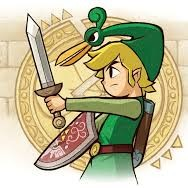
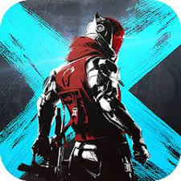
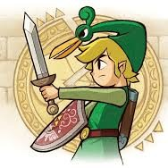
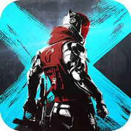


 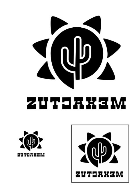
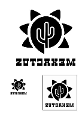